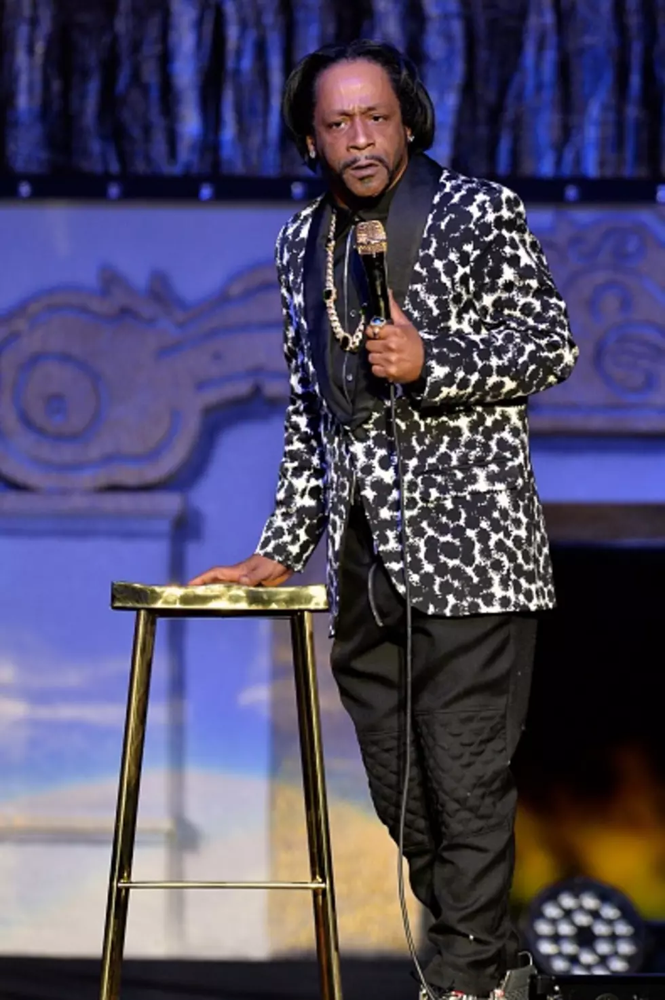

Hei!
Dette er en paragraf med litt tekst.
Recap fra undervisningsøkta

Her er et bilde av Katt Williams. Bildet ble lastet ned i ei undervisningsøkt og er lenket i en relativ mappe. Jeg har justert størrelsen litt i CSS.
Videre på egenhånd
Jeg fikk litt problem med grensesnittet fordi jeg lagret filen uten utvidelsen .html. Jeg er vant til HTML, men lærer fremdeles om GitHub og VSCode. Jeg har også lært om CSS og hvordan jeg kan bruke det til å style nettsiden.
En ting jeg liker med HTML er lettvint støtte for diverse språk, tegnsett og skriveretninger.
我不會說中文，但我可以用CSS來設計它。
הנה קצת עברית. מימין לשמאל מובנה ולא צריך אקס.
Vanligvis liker jeg ikke å spesifisere skrifttyper eller -familier, men ikke alle støtter alle tegnsett.
Fra akademia er jeg mest vant til kjedelige nettsider med lite styling
Jeg er vant til LATEX og Metafont. Derfor syns jeg flex er litt kult. I CSS kan jeg bygge inn én skrifttype og justere diverse parameter.